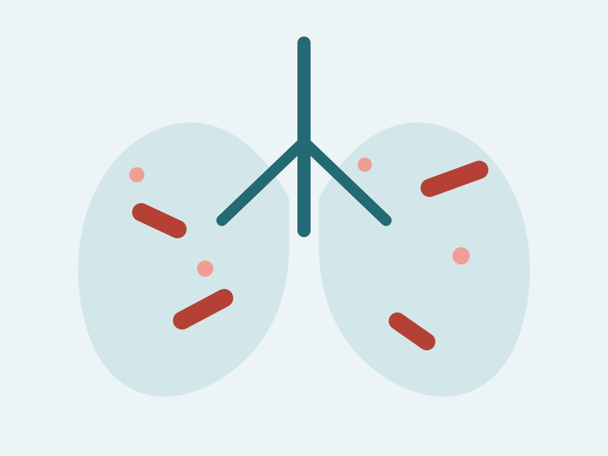

Research
Resolving infection biology across molecular, cellular and tissue scales
The research program combines method development with mechanistic and translational studies of chronic pulmonary infection.
Return to scrolling overviewDual spatial transcriptomics
Mapping bacterial and host programs in the same tissue
We develop strategies to detect bacterial transcripts together with host gene-expression programs in intact tissue. This is designed to reveal localized bacterial states, immune niches and pathological responses that are not preserved after tissue dissociation.
- FFPE and fresh respiratory tissue
- Custom bacterial probe design
- Pathology-informed spatial analysis
- Host–pathogen neighborhood inference
NTM lung disease
Mechanisms of chronic respiratory infection
We study non-tuberculous mycobacteria, particularly Mycobacterium abscessus, in cystic fibrosis and other susceptible hosts. The work connects bacterial phenotype, host immunity and tissue-level disease.
- Human cohorts and explanted lung tissue
- Airway epithelial models
- Chronic pulmonary infection models
- Immune pathways associated with pathology and protection

Single-cell and multi-omics
Defining cellular states associated with disease progression
Spatial and single-cell data are integrated with bulk host and bacterial transcriptomics, immune profiling and clinical variables to identify reproducible disease-associated programs.
- Single-cell RNA sequencing
- Bulk host and bacterial RNA sequencing
- Multiplex cytokine and biomarker profiling
- External cohort validation